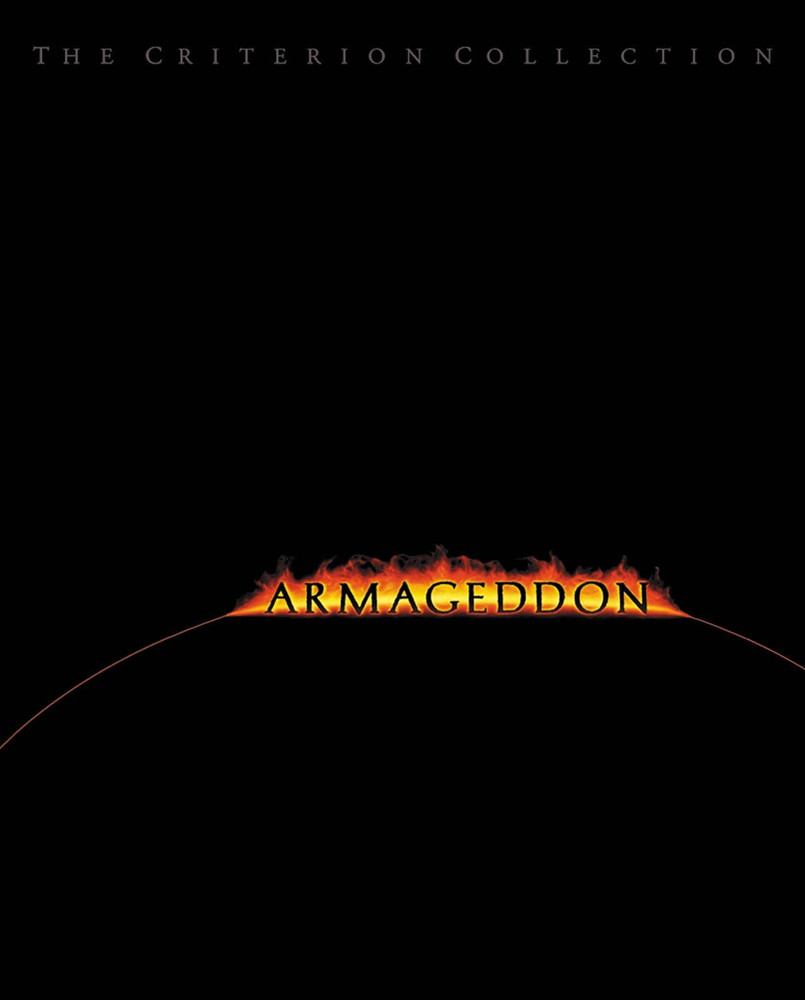
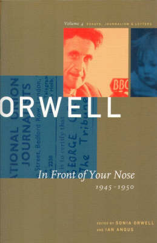
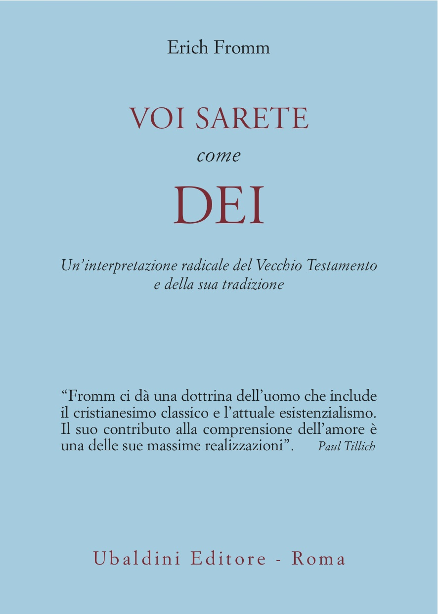
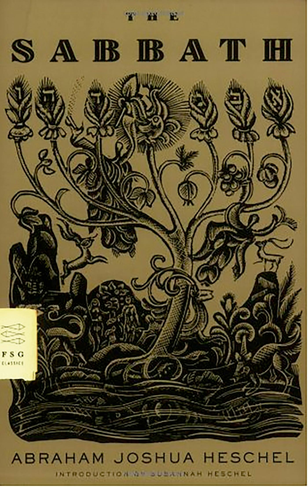

37:44 · 5 OPERE
La costruzione della narrativa: il caso dell'India.
Il filo del discorso
Nel contesto della crisi sanitaria del 2021, il relatore esamina la costruzione delle notizie sull’India e contrappone fotografie drammatiche, stime di mortalità e dati letti sulla stampa locale. Si interroga sul passaggio rapido di un articolo del New York Times ai giornali italiani e considera contraddittoria la coesistenza di cronache della seconda ondata e successive notizie di riapertura. La scheda distingue date, territori e misure: un miglioramento a Delhi non cancella una crisi nazionale precedente, e una stima cumulativa non coincide con i decessi comunicati in un giorno. Il discorso si allarga al confronto con Svezia e Stati americani, alla classificazione dei decessi e alle autopsie. La critica del relatore a restrizioni e informazione è conservata come opinione; grafici descrittivi e aneddoti non dimostrano da soli la causalità delle politiche o una frode sanitaria. Armageddon diventa un esempio narrativo dell’ascolto di proposte diverse; Orwell e Ai confini della realtà accompagnano la polemica sulle contraddizioni pubbliche. Nella seconda parte, gli incentivi vaccinali di New York e alcuni interventi politici sono interpretati come segni di una comunicazione paternalistica. La conclusione richiama Fromm e Heschel e il principio ebraico della salvaguardia della vita. Questo riferimento etico non costituisce una prova medica che le misure discusse causassero i danni denunciati, né una equivalenza storica con il nazismo.
I libri nel discorso

Armageddon
Copertina dell’edizione Criterion in DVD: Film del 1998 diretto da Michael Bay. Immagine dell’edizione Criterion, spine 40, director’s cut di 153 minuti, edizione speciale in due DVD.
Copertina ufficiale Criterion di Basia Grocholski, basata su una locandina cinematografica: fondo nero, titolo in fiamme e arco del pianeta. È una edizione home video, non un libro né la prima locandina americana.
Armageddon e Bruce Willis espliciti, titolo normalizzato dall’ASR.
Passaggio 11:52 ↗ · Fonti e libro ↗
In Front of Your Nose
Identificazione probabile
Copertina: David R. Godine, Nonpareil · Collected Essays, Journalism and Letters, vol. 4
Copertina della raccolta In Front of Your Nose, 1945–1950, quarto volume dei Collected Essays, Journalism and Letters, curato da Sonia Orwell e Ian Angus. Il saggio omonimo è incluso a pagina 122: l’immagine rappresenta la raccolta, non una pubblicazione autonoma del saggio. Nessuna edizione attribuita al video.
Orwell e il vedere quanto è davanti agli occhi: riferimento probabile al saggio, titolo non pronunciato.
Passaggio 24:49 ↗ · Fonti e libro ↗Ai confini della realtà (The Twilight Zone)
Fotografia d’archivio della serie originale: Serie originale CBS, 1959–1964, creata e presentata da Rod Serling. Fotografia d’archivio dell’episodio Time Enough at Last, 20 novembre 1959, con Burgess Meredith.
Fotografia autentica della galleria Rod Serling Archive: Burgess Meredith nel ruolo di Henry Bemis con gli occhiali rotti in Time Enough at Last. Illustra la serie in generale: quell’episodio non è citato nel video. Non è una copertina di libro o cofanetto, né una immagine della ripresa del 2019.
The Twilight Zone e Ai confini della realtà espliciti; nessun episodio indicato.
Passaggio 28:11 ↗ · Fonti e libro ↗
Voi sarete come dèi. Un’interpretazione radicale del Vecchio Testamento e della sua tradizione
Identificazione probabile
Copertina: Astrolabio Ubaldini, collana Ulisse, traduzione di Stefania Gana, 160 pagine. Prima traduzione italiana registrata nel 1970; originale You Shall Be as Gods, 1966. La copertina proviene dal catalogo editoriale corrente.
Copertina autentica azzurra fornita da Astrolabio Ubaldini, con autore, titolo bordeaux, sottotitolo e citazione di Paul Tillich. Il catalogo corrente non data questa specifica ristampa: non si attribuisce all’immagine un anno arbitrario né si confonde il 1978 di alcune schede commerciali con la prima italiana del 1970. L’opera citata resta probabile, non essendo visibile la slide né pronunciato il titolo.
Fromm esplicito; identificazione probabile dal passo sulla sospensione dei precetti per la vita, senza titolo pronunciato.
Passaggio 34:32 ↗ · Fonti e libro ↗
Il sabato. Il suo significato per l’uomo moderno (The Sabbath)
Identificazione probabile
Copertina: Immagine dell’edizione inglese The Sabbath, Farrar, Straus and Giroux, FSG Classics, 2005, introduzione di Susannah Heschel e illustrazioni di Ilya Schor. Opera originaria del 1951.
Copertina autentica FSG Classics, color ocra con decorazione nera di animali, vegetazione e caratteri ebraici; autore e titolo inglese leggibili. Non è una copertina italiana e non viene presentata come l’edizione mostrata nel video. Il collegamento al libro è probabile, a partire dalla metafora attribuita a Heschel.
Heschel e la costruzione sacra nel tempo: collegamento probabile a The Sabbath, titolo non pronunciato.
Passaggio 35:29 ↗ · Fonti e libro ↗